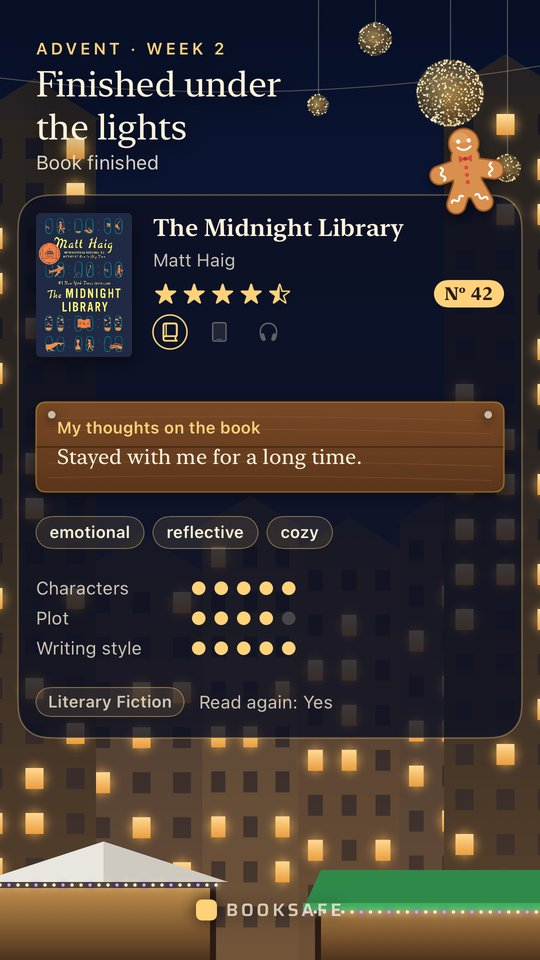
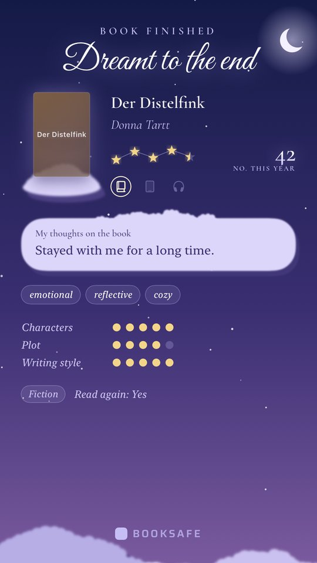
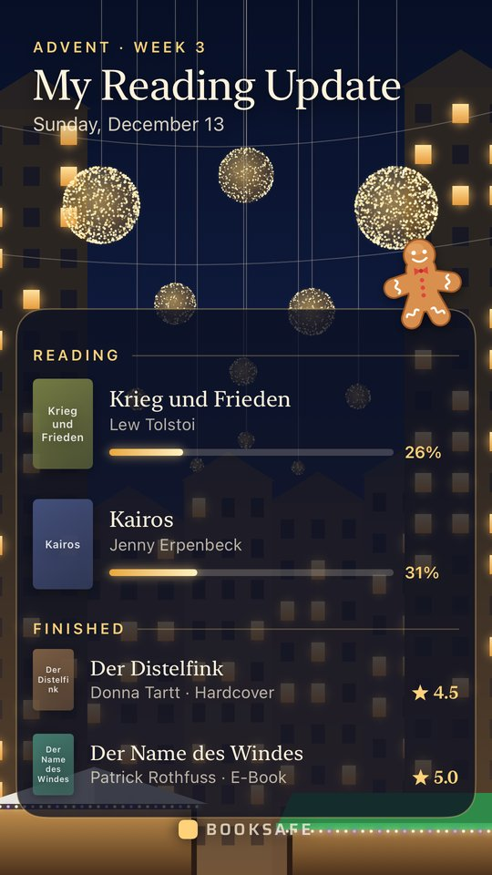

What this update is about
BookSafe 1.12 brings winter to your Today screen: in December, snow falls behind your cards and settles, plus Christmas quotes and festive special days. You can also share a finished book as a quick review, and the reading update gains two Christmas designs.
The same version 1.12 is on Google Play. There you get the library, wishlist, reading timer, reading update and quick review, and in December snow on the Today tab with festive special days and two Christmas designs to share. Android has no widgets and no watch. You buy BookSafe Pro there once on Google Play; the purchase does not unlock the iPhone app. What this page says about iPad applies only to iPhone and iPad.
This page describes the changes in more detail than fits into the App Store release notes.
Version 1.12 · released 15 November 2026
New
The snowstorm, quote cards and quotes in points 1 and 2 describe BookSafe on the App Store, for iPhone and iPad.
1Winter on Today
In December, snow falls behind your cards — heavier on some days, and as a snowstorm on 14 and 21 December. Flakes settle on the cards, and the snow caps grow over the days.
2Christmas quotes and festive special days
Eight Christmas quote cards and 31 quotes just for December. On St Nicholas’ Day, Christmas Eve and New Year’s Eve the whole Today screen turns festive — on New Year’s Eve with your reading year and fireworks. Prefer it plain? Turn off “Seasonal designs” in Settings.
3Share a quick review
Share a book you’ve read or listened to from its details as a story: with its number in your reading year, your stars, your impression and, if you like, your thoughts on the book. The quick review comes in all eight designs of the reading update.


4Two Christmas designs for your reading update
“City Lights” shows your books with their covers in front of an old-town lane with glowing spheres and a gingerbread man. In “Glow Spheres”, each book you’re reading becomes a glowing sphere that lights up as far as you’ve read. During Advent, the Advent week appears on the card.

Improved
- “Dreamy” film: up to 100 books each shine as their own star in the constellation, up to 200 on iPad in portrait, and on iPad the film uses the full width
- Series: the header separates the books you own from your wishlist, and wishlist volumes carry the purple “W”
- Pro: if a purchase isn’t unlocked right away, BookSafe now says so clearly, and “Restore purchases” no longer wrongly claims you haven’t bought Pro
Plus many further refinements.
Earlier versions
What BookSafe has learned since version 0.4 — from the loan tracker and iCloud sync to the Apple Watch and the Year in Review films — is collected in the archive. Together, the versions show everything the app can do today.
To the archive of earlier versions →Good to know
| Requirements | iPhone and iPad on iOS 18 or later, Apple Watch on watchOS 11 or later. Android on Google Play, with no widgets and no watch |
|---|---|
| Your data | On iPhone and iPad: no account, no tracking, sync through your own private iCloud. On Android the library stays on the device. Pro does not carry across platforms. |
| Price | Free for up to 50 books. BookSafe Pro: €3.99 one-time on the App Store or €3.99 billed via Google Play, in Germany; prices vary by country. No subscription. A purchase applies only on that platform. |
| Updating | On iPhone through the App Store, on Android through Google Play. |